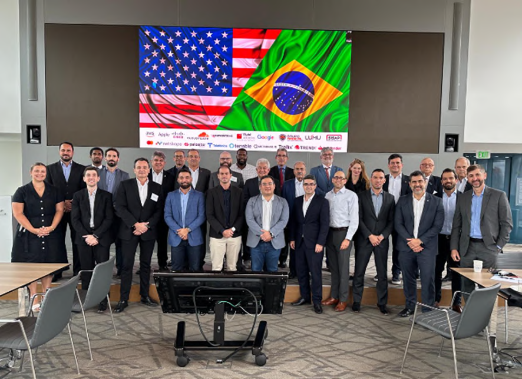

A apresentação fornecida pelo IBDCyber menciona a missão como oportunidade de intercâmbio sobre cibersegurança. A fonte informa as cidades e o ano. Esta versão não atribui parcerias, acordos ou entregas que não estejam detalhados no material.
Fonte: Apresentação institucional do IBDCyber
Abrir documento ou página de origem ↗
Referência conferida em 17/10/2026